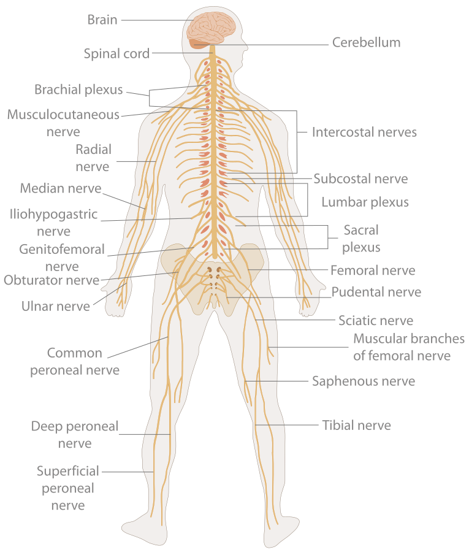
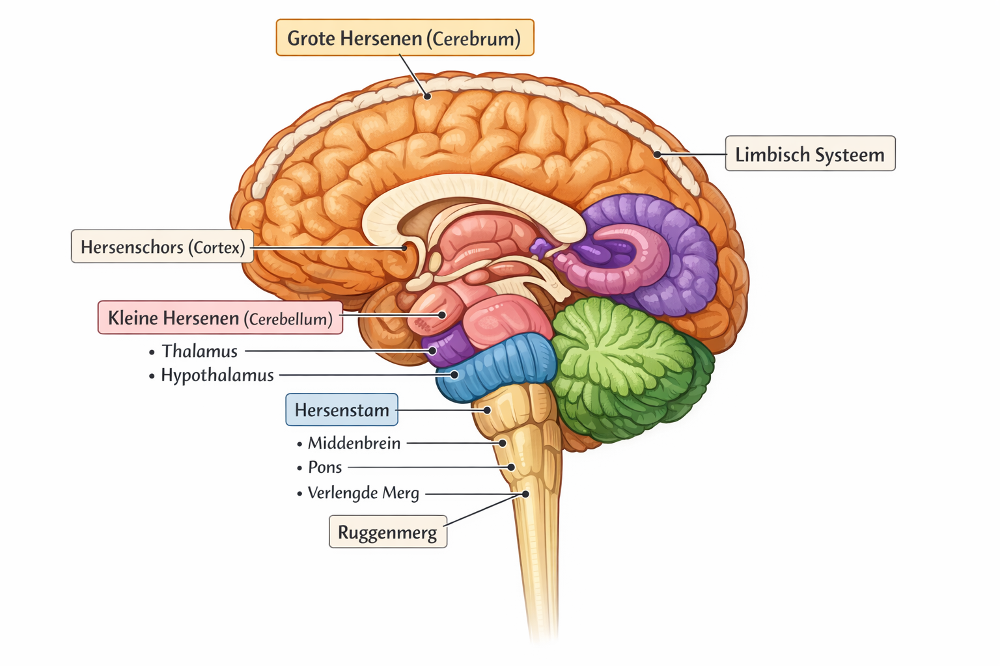

Inleiding zenuwstelsel
Het zenuwstelsel speelt een coördinerende rol bij:
- het aansturen van de spieren
- het verwerken van zintuiglijke prikkels
- emotionele en cognitieve processen
Het zenuwstelsel wordt bestudeerd door de neurofysiologie en de neurologie.
Indeling
- centraal zenuwstelsel
- hersenen
- ruggegraat
- periferere zenuwstelsel
- autonome zenuwstelsel
- sympathisch deel
- parasympatische deel
- somatische zenuwstelsel
- autonome zenuwstelsel
periferere deel: de verbinding tussen het centrale stelsel, de spieren en de organen.
autonome stelsel: betrokken bij automatische processen en reflexen zoals ademen.
sympathisch deel: zet aan tot actie in tijden van stress en opwinding
parasympatische deel: bespaart energie en middelen tijdens ontspanning
somatisch stelsel: stuurt de spieren aan en zorgt er bijvoorbeeld voor dat we kunnen bewegen en praten.

Hersenen

De hersenen zijn een complex orgaan.
De hersenen van de mens bestaan uit gemiddeld 86 miljard zenuwcellen of neuronen, waarvan ieder via axonen met een groot aantal andere neuronen in verbinding staat, soms met vele duizenden.
Grote hersenen
Onderdelen
- Hersenschors
- Basale ganglia
- Hippocampus
- Amygdala
- Limbische systeem
- Hypothalamus
- Gyrus cinmguli
- Fornix
- Thalamus
- Corpus callosum
- Overige witte-stofbanen
- Septale kernen
Functies
- Bewuste waarneming
- Denken, plannen en beslissen
- Taal
- Emoties en motivatie
- Geheugen
- Wllekeurige motoriek
Kleine hersenen (cerebellum)
Onderdelen
- lobus cerebelli anterior (voorkwab)
- lobus cerebelli posterior (achterkwab)
- lobus flocculonodularis (vestibulocerebellum)
Functies
- beweging coördinere
- evenwicht en balans
- timing
- denken en taal